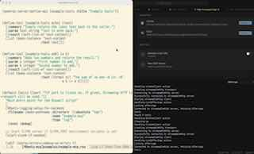

Posts with tag "programming"
Как продвигаются дела с MCP фреймфорком для Common Lisp
posted on 2025-06-29

Привет, друзья! Сегодня хочу дать небольшой апдейт по тому, как продвигаются дела с MCP-фреймворком для того, чтобы можно было писать MCP-сервера на Common Lisp.
На этих выходных я закончил реализацию протокола с Streamable-HTTP. Для чего это нужно было? Почему нельзя было обойтись просто поддержкой STDIN/STDOUT протокола? Streamable-HTTP позволяет создавать MCP-сервера, к которым смогут подключаться клиенты удаленно. То есть этот MCP-сервер может быть развернут где-то в облаке.
Одна из моих ближайших целей - сделать MCP-сервер для сайта https://ultralisp.org. Идея пока такая, что Ultralisp будет предоставлять MCP-сервер для поиска Common Lisp библиотек, а также для поиска функций, макросов и прочего, что внутри этих библиотек есть.
То есть этот MCP-сервер будет давать код-ассистенту доступ к док-стрингам всех Lisp библиотек. И тогда код-ассистент сможет находить нужные ему библиотеки и функции внутри этих библиотек, даже если эти библиотеки еще не установлены в его окружении. И далее с помощью других инструментов код-ассистент сможет эти библиотеки поставить и воспользоваться теми функциями, что он нашел.
Для этого я добавил в свой MCP-фреймворк поддержку Streamable-HTTP. Чтобы это сделать, пришлось написать еще одну библиотечку, которая реализует поддержку Server-Sent Events протокола для CLACK - clack-sse.
Server-Sent-Events - это такой упрощенный аналог WebSocket, который позволяет серверу отправлять события на клиент по HTTP. В Streamable-HTTP протоколе MCP-сервера этот метод используется для того, чтобы отправлять уведомления об изменениях внутри сервера.
В видео, которое закреплено в этом посте, я как раз показываю, для чего используются такие пуши с сервера. Там демонстрируется, как при изменении инструментов внутри Common Lisp образа уведомления автоматически доставляются в IDE, и оно мгновенно узнает о том, что поменялось описание инструмента или, например, добавился новый инструмент.
Выглядит все это довольно круто, теперь можно с помощью моего фреймворка интерактивно разрабатывать MCP-сервера и тут же их тестировать в IDE.
Почему я использую package-inferred ASDF стиль в своих библиотеках
posted on 2025-08-24
C package-inferred ASDF, тебе не надо задумываться о том, какие зависимости есть между твоими файлами. Точнее задумываеться конечно надо, но исключается ситуация, когда ты прописал их в неправильном порядке.
Например, если ты добавляешь в один из файлов использование символа, который определен в другом файле как функция, то нужно поменять местами эти модули в описании ASDF системы.
Тут важно не забыть сделать это вручную, потому что иначе компилятор не сможет оптимизировать код. Ведь он не будет знать, что этому символу соответствует функция.
В случае же с в package-inferred system, все зависимости между компонентами системы прописываются явно в каждом файле. За счёт этого легко отследить какие символы из какого файла проимпортированы, а загрузчик библиотеки загружает файлы в правильном порядке согласно импортам в DEFPACKAGE.
Но даже в случае с package-inferred system зависимости надо прописывать в каждый файл и это можно забыть сдеалать. В таком случае, при загрузке библиотеки с нуля может возникнуть ошибка в духе "такой-то пакет не найден". Чтобы предотвратить случаи, когда для какого-то из используемых символов я забыл прописать IMPORT-FROM, я сделал линтер, который проверяет (в том числе и в PR), что:
• Ни одна из зависимостей не забыта • Нет неиспользуемых импортов
Это позволяет поддерживать ASDF систему в здоровом состоянии.
Конечно, для небольшой системы, состоящей из одного файла, использование старого способа описания ASDF системы не вызывает проблем. Однако со временем системы склонны разрастаться.
Когда система становится большой, рефакторить ее и переделывать из old-school ASDF систем в package-inferred system может быть довольно проблематично.
Также, то что package-inferred ASDF система требует явного описания и указания пространства имён, в которое помещаются символы. Это помогает пользователям библиотек лучше понимать, к какой области относится определённый символ.
Конечно, то же самое можно сделать, определив несколько пакетов и описав их в системе в старом стиле. Однако это потребует дополнительных усилий, так как нет чётких правил о том, в каком пакете должны находиться символы из определённого файла.
Как я вижу, тут коммон-лисперы разделяются на два лагеря. Одни - любят и используют package-inferred, другие - ненавидят. А к какому лагерю относишься ты?
This blog covers commonlisp, llm, codabrus, clos, actors, learning, news, ai, automation, voice, projects, holism, zerocoder, python, codeassistant, aider, cursor, project, i18n, poftheday, visualization, closed, tips, seo, telegram, bot, прототип, smarthome, yandexcloud, logging, ideas, experiment, software, thoughts, programming, hackathon, mtstruetech, robotics, problems, salebot, bots, notes, emacs, macos, lisp, failures, infrastructure, lispworks, life, идеи, mcp, sql, nix, ultralisp, tutorials, reblocks, yandex, cloud
Created with passion by 40Ants